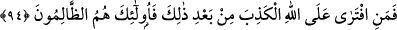
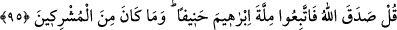

Eğer Tevrat, Muhammed’in sizi dâvet ettiği şeyi değil de sizin dediğinizi doğru kabul
ederse Tevrât’ı getirip okuyun.
Rivâyet edilir ki: Yahûdîler, Tevrât’ı çıkarmaya cesâret edemeyerek münâzarada
yenilmiş ve küçük düşmüşlerdir.
Bu âyet-i kerîme’de Hz. Peygamber (s.a.)’in doğru olduğuna ve yahûdîlerin inkâr
ettikleri neshin câiz olduğuna apaçık delil vardır.
94. Artık bundan sonra her kim Allah’a karşı yalan uydurursa, işte bunlar,
zâlimlerin ta kendileridir.
“Artık bundan sonra kendilerine Tevrât’ı getirip okumaları emredilip bunun üzerine
sus pus olmalarından sonra kim Allah’a iftirâ ederse yani Allah Teâlâ’nın, Tevrat
indirilmeden önce mezkûr yiyecekleri İsrâiloğulları’na ve onlardan öncekilere haram
kıldığını iddiâ ederek Allah hakkında yalan uydurursa işte bunlar; hakikat ortaya
çıktıktan, münâzara ve mücâdele sahaları daraldıktan sonra, uydurmakta ısrarlı olan
zâlimlerdir. Zulüm ve düşmanlıkta ileri gidip aşırı davrananlardır.
95. De ki: Allah doğruyu söylemiştir. Öyle ise, hakka yönelmiş olarak İbrâhîm’in
dînine uyunuz. O, müşriklerden değildi.
“De ki: “Allah doğru söyledi.” Haram kıldığı şeyle ilgili olarak doğruluğu sâbit ve
zâhir olmuştur. “İbrâhîm’in dînine uyunuz.” Yani İslâm’a uyun ki o, aslında İbrâhîm
(a.s.)’ın dinidir. Siz de, iddiâ ettiğiniz gibi O’nun dînine uymuyorsunuz. “Hanif olan”
ifadesi bâtıl dinlerin tamamından yüz çeviren İbrâhîm’e tâbi olunuz, demektir. “Ve o,
müşriklerden değildi.” Ne aslî, ne de fer’î hiçbir dînî konuda müşriklerle ilişkisi yoktu.
Burada, yahûdîlerin de şirk koştukları ta’riz edilmekte ve Hz. İbrâhîm’le yahûdîler
arasında kesinlikle hiçbir dînî alâka bulunmadığı açıkça belirtilmektedir. Bundan
maksat; Hz. Peygamber (s.a.)’in; dînin aslî konularında Hz. İbrâhîm’in dînî üzere
olduğunu beyân etmektir. Çünkü, Rasûlullah (s.a.), sadece tevhîde ve Allah’dan başka
bütün mabûdlardan uzaklaşmaya çağırıyor.
Necmüddin, “et-Te’vîlât”ta der ki: “İyice incelendiğinde bu âyet-i kerîmede şöyle
bir işaret ve tasavvufî anlam vardır: “Allah Teâlâ, tüm mahlûkatını üç sınıf olarak
yaratmıştır.
Birinci sınıf: Nûrânî, latîf, ulvî ve ruhânî olan meleklerdir. Allah, onların gıdalarını,
zikir yapmış ve onları sırf ibâdet için yaratmıştır.